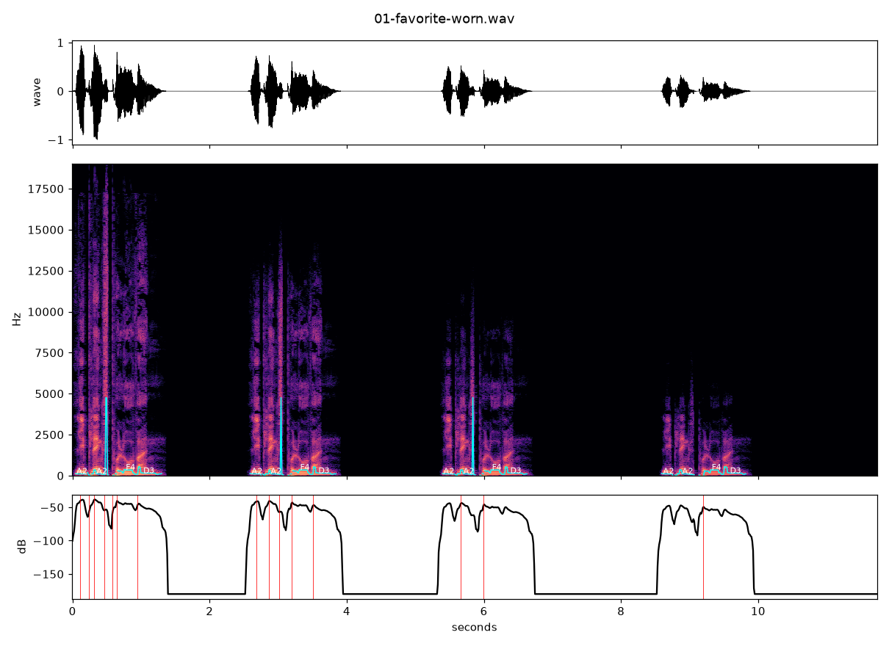
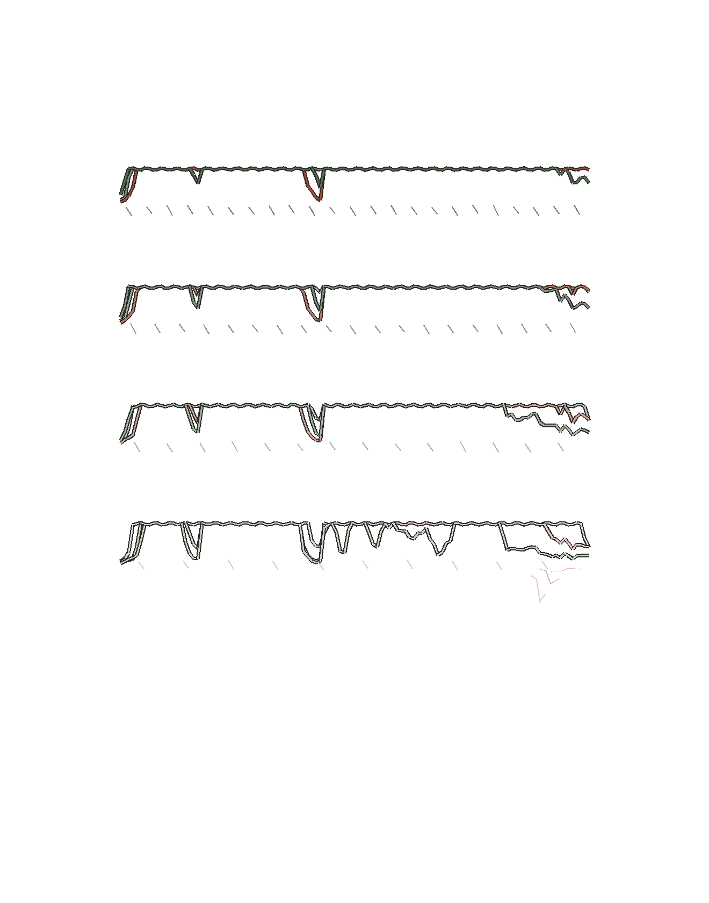
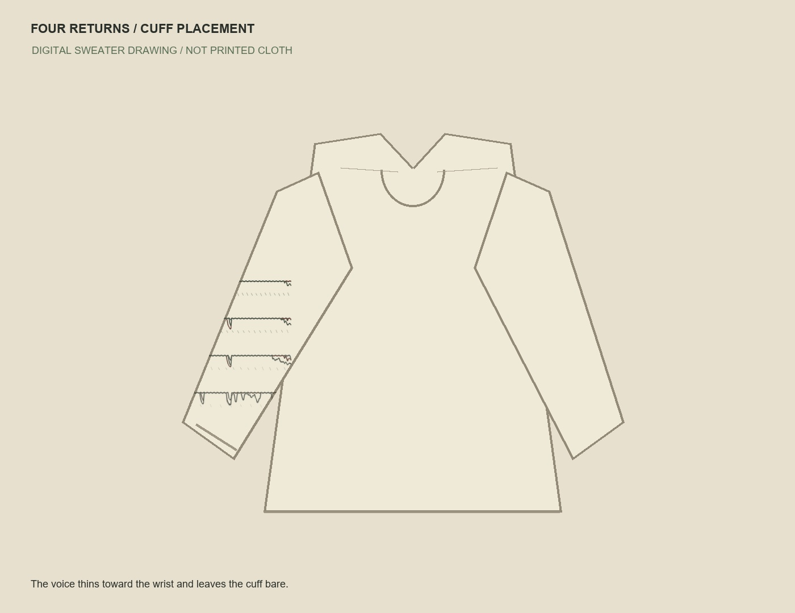

Sider · 2026
Favorite, worn
One pronunciation returns four times, each a little darker, until the voice recedes into silence. Its trace loosens toward the cuff.
Listen

Wear


Sider · 2026
One pronunciation returns four times, each a little darker, until the voice recedes into silence. Its trace loosens toward the cuff.


